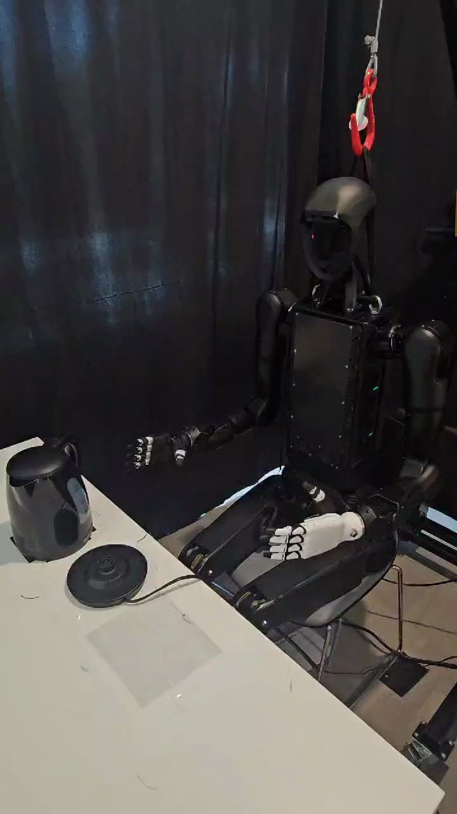

Humanoid Everyday · high-precision-4__place_kettle_on_base
Place kettle on base

Visual review action_review.json
{
"prompt_protocol": "humanoid_action_v1",
"prompt_provenance": "visually_authored_from_video_and_initial_frame",
"reviewed_contact_sheets": [
"sheet_001.jpg",
"sheet_002.jpg",
"sheet_003.jpg",
"sheet_004.jpg",
"sheet_005.jpg"
],
"inspected_frame_stride": 2,
"inspected_sampled_frame_count": 315,
"initial_scene": "Seated humanoid faces the table. A silver kettle with a dark lid and handle rests separately from its black circular wired base. Anatomical right hand is extended toward the kettle; left hand lies open over the left thigh.",
"observed_sequence": [
{
"source_frame_interval": [
0,
132
],
"action": "Right arm extends toward the separate kettle while the left hand stays on the lap; kettle and base remain on the table.",
"confidence": "high"
},
{
"source_frame_interval": [
133,
188
],
"action": "Right hand reaches the kettle handle and closes around its upper handle region. The kettle begins to rise.",
"confidence": "high"
},
{
"source_frame_interval": [
189,
248
],
"action": "Right hand lifts kettle clear of the tabletop and carries it inward over the circular base; at frame 246 the bottom is visibly above the base.",
"confidence": "high"
},
{
"source_frame_interval": [
249,
274
],
"action": "Right hand lowers kettle onto the circular base, keeping it upright; base remains visible as a rim underneath.",
"confidence": "high"
},
{
"source_frame_interval": [
275,
456
],
"action": "Right hand remains at handle holding the placed kettle steady with small settling adjustments; left hand does not support the kettle or base.",
"confidence": "high"
},
{
"source_frame_interval": [
457,
552
],
"action": "Right fingers open and release the handle, moving clear while kettle remains upright on the base.",
"confidence": "high"
},
{
"source_frame_interval": [
553,
628
],
"action": "Right arm retracts toward the torso, leaving the kettle undisturbed on its base; left hand remains on lap.",
"confidence": "high"
}
],
"arm_hand_roles": {
"right": "Sole manipulating hand: grasps kettle handle, lifts and transfers kettle, lowers and steadies it on base, opens fingers and withdraws.",
"left": "Idle hand rests open over left thigh throughout; no grasp, supporting contact or hand-to-hand transfer.",
"coordination": "Single-hand placement with no bimanual coordination or person interaction."
},
"anatomical_side_evidence": {
"convention": "Robot-relative anatomy, established from front/three-quarter view of face and chest.",
"right": "Active dark hand can be traced through forearm/elbow to shoulder on the robot right, which appears to viewer left in this front view.",
"left": "White-backed idle hand attaches through foreground arm to opposite shoulder on robot left, viewer right.",
"confidence": "high",
"uncertainty": null
},
"terminal_state": "Kettle sits upright on the round base, with a base rim and wire visible. Right hand has released and withdrawn beside torso; left hand remains on lap. No electrical activation is shown.",
"uncertainties": [
"Electrical contact alignment and a working electrical connection are not directly visible; success describes stable physical placement only.",
"Some individual finger contact points on the dark handle are occluded, but the handle grip, supported lift and later release are visible."
],
"annotation_discrepancies": [],
"annotation_verification": "Source describes careful placement for electrical connection. Physical placement is observed, while proper electrical connection cannot be verified from this video.",
"evidence_frame_indices": [
0,
148,
190,
214,
246,
268,
300,
450,
480,
552,
576,
628
],
"source_initial_png_inspected": true,
"inspection_coverage": "All five contact sheets viewed visually, covering every second decoded frame from 0 through 628. Native 720x1280 frames inspected for approach/contact, lift/transport, lowering, hold, finger opening, withdrawal and final state, plus original first-frame PNG.",
"selected_execution_status": "success",
"selected_execution_status_basis": "Visible physical kettle placement is complete and stable after hand release; electrical connection not claimed.",
"video_id": "high-precision-4",
"dataset": "Humanoid_Everyday",
"dedicated_review_agent": "review_he_high_precision_4",
"review_source_video": "Humanoid_Everyday/high-precision-4__place_kettle_on_base/third_person/original/original.mp4",
"source_frame_count": 629,
"source_fps": 30.008778402585175,
"native_detail_frames": [
0,
148,
190,
214,
246,
268,
300,
450,
480,
552,
576,
628
],
"world_model_prompt": "The humanoid robot grasps the kettle's handle with its right hand, lifts it from the tabletop, and carries it over the separate circular base. It lowers the kettle onto the base, steadies it while it settles, then opens its fingers and withdraws the right hand, leaving the kettle upright on the base. Keep the camera fixed; preserve robot geometry, physically valid joint motion, and normal gripper opening and closing.",
"original_task_instruction": "Placing a kettle precisely on its electrical base, requiring careful alignment of contacts and stable positioning for proper connection.",
"selected_segment": {
"start_frame": 0,
"end_frame_exclusive": 629,
"reason": "Complete original single-task reference; no cropping or trimming requested."
},
"source_video_sha256": "bd96ba3dc3386aad8b3e0c40e0a58b41b17a57454099a0a2b437cc81ed6e5749",
"review_completed_at": "2026-10-13T17:15:51.409040+00:00"
}